Fiordland
Fiordland, es un lugar de extraordinaria
belleza natural. Esta región remota ofrece un rango de paisajes
impresionantes y una muy variada gama de actividades.
Milford Sound (Piopiotahi), es la principal atracción de la región
que ha cautivado incontables turistas por más de cien años.
El pintoresco pueblo a orillas del lago Te Anau, ofrece amplias
opciones gastronómicas tanto como alquiler de Kayak y caminatas por
Milfourd, Routeburn y kepler Tracks
que forman parte de las mejores en Nueva Zelanda.
Esculpido por glaciares durante 100.000 años, el paisaje es uno donde el
agua cae en cascadas cientos de metros hasta las profundidades de los
negros fiordos; donde antiguos bosques pluviales inexplorados por el
hombre se aferran a las montañas.
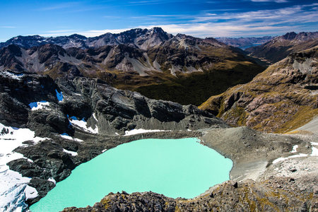
 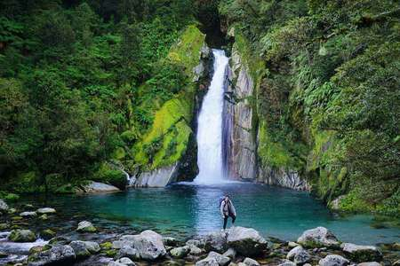
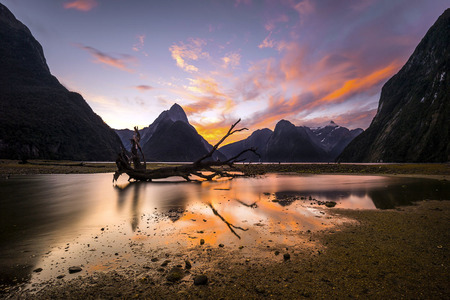
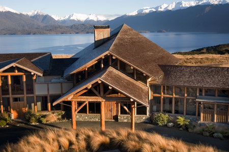
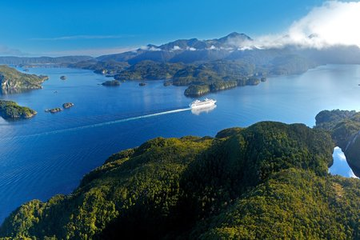
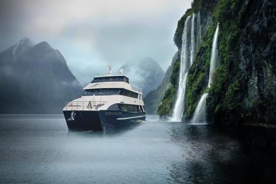
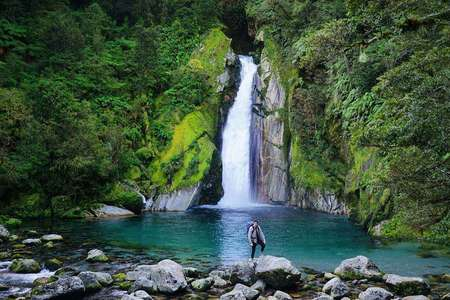
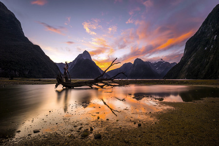
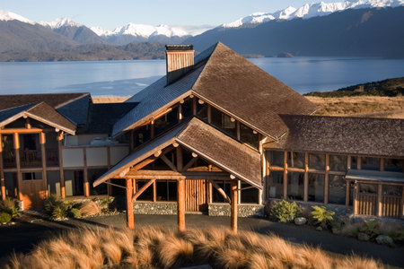
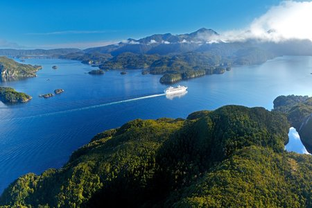
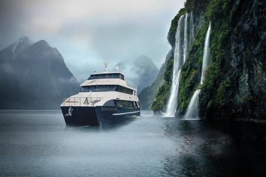